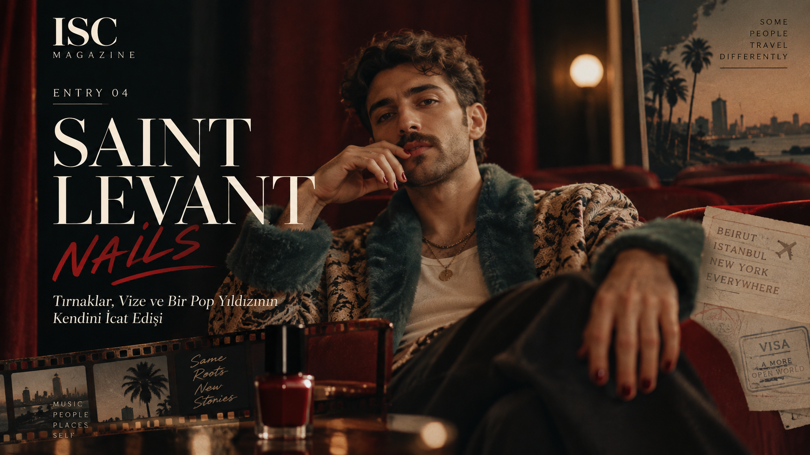
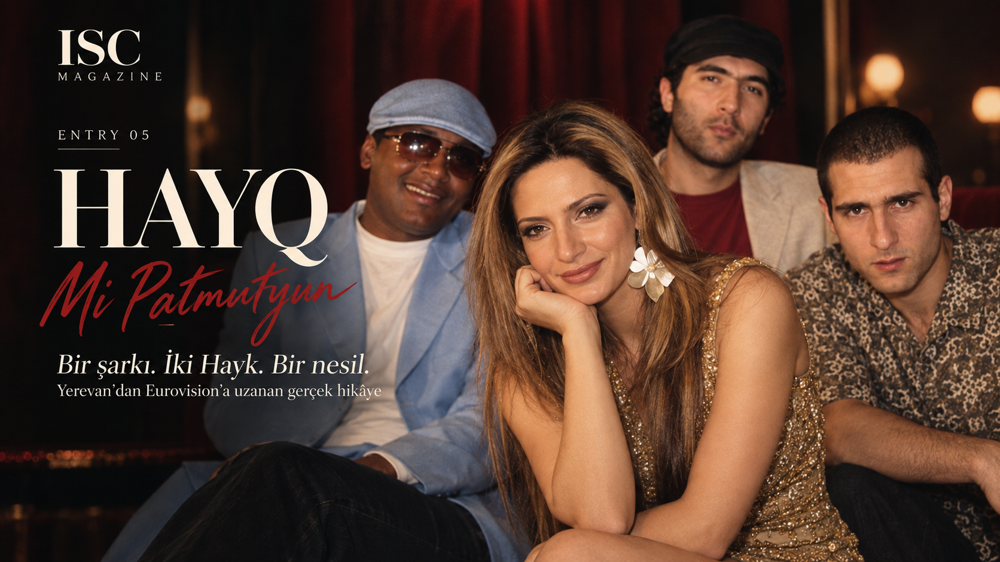
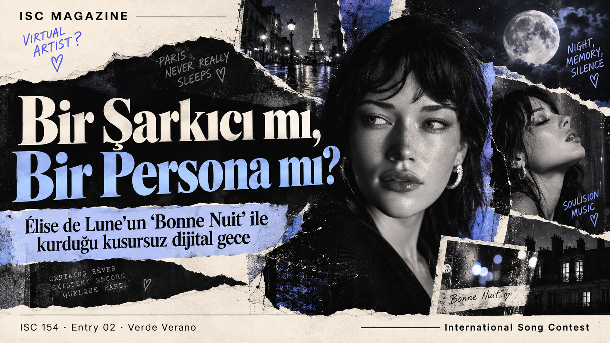
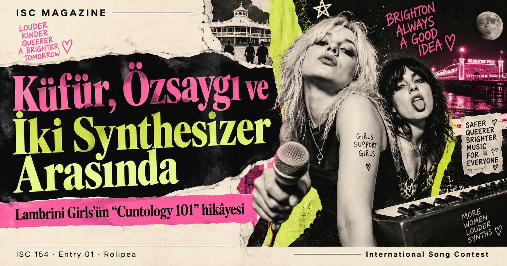

YouTube playlist
Loading current edition
International Song Contest · Current Edition
ISC —
Güncel edisyon yükleniyor…
Şimdi öne çıkan
—
— · —
RESULTS STATUS LOADING
ISC LIVE PULSE
CURRENT EDITION
VOTING STATUS
Loading…
Oylama süresi hesaplanıyor…
BALLOT WATCH
NEXT EVENT
GRAND FINAL · 22:00
Yayına kalan süre hesaplanıyor…
VOTING ROOM
OY VER
→
0/8
delegasyon
Canlı durum yükleniyor…
LIVE ACTIVITY
ISC 154 canlı durumu hazırlanıyor…
8 LONG READS →
 FİNAL YAYINI
GÜNCEL TARİH25 EYLÜL · 22.00 TSİ
FİNAL YAYINI
GÜNCEL TARİH25 EYLÜL · 22.00 TSİ
ISC 154 · CANLI ETKİNLİK
Birlikte izleyelim.
25 Eylül gecesi sekiz şarkıyı aynı anda, aynı yayın odasında izliyoruz. Canlı sohbet ve senkronize oynatma tek ekranda.
Meet the acts
Sahnede kim var?
Güncel edisyonun katılımcıları yükleniyor…
Listen everywhere
Şarkıları burada aç.
Güncel edisyon playlistleri yükleniyor…
Spotify playlist
ISC LIVE
—
Your points. Your country.
VOTING ROOM →
Şimdi sıra sende.
Güncel edisyonun puanlama sistemi yükleniyor…
OYLAMA SONU · 25 EYLÜL 18.00 TSİ
ISC MAGAZINE / ISSUE 154
8
LONG READS
2026
From the archive magazine
Sahnenin arkasındaki hikâyeler.
ISC yalnızca scoreboard değil. Bu edisyonun sekiz entry’si, sanatçıların hayatlarına ve şarkıların arkasındaki kültüre açılan sekiz ayrı dergi dosyasına dönüştü.
Aşkın Son Şahidi: ChatGPT
Galena’nın skandallardan robotlara uzanan yirmi yıllık pop-folk hikâyesi.
LONG READ’I AÇ →

Bir Şarkıyı Elli Yıl Sonra Duymak
Laura Pausini, Jeanette ve “¿PORQUÉ TE VAS?”ın bitmeyen hayatı.

Başrolü Kimse Vermedi, Kendisi Yazdı
Writers’ room’dan kendi pop evreninin başrolüne.

Tırnaklar, Vize ve Bir Pop Yıldızının Kendini İcat Edişi

Bir Korsan CD’den Eurovision’a

Bir Şarkıcı mı, Bir Persona mı?

Küfür, Özsaygı ve İki Synthesizer Arasında
Brighton barlarından ballroom diline.

Kabil’den Bombay’a, Göteborg’dan Kapadokya’ya
“MAZAA”nın içinde saklı İsveç pop ağı.
The archive
Her edisyon bir dönem.
Güncel edisyon ve geçmiş yarışmaların kalıcı kayıtları arşivde bir arada.